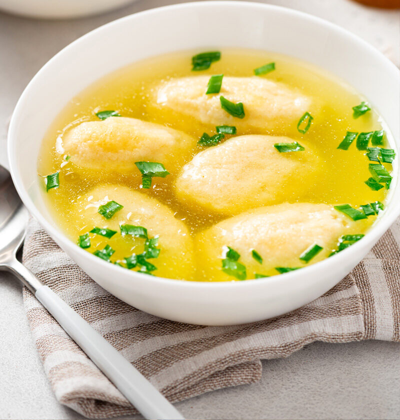

Supa cu galuste

Description
In Ardeal si Banat aceasta supa cu galuste de gris este „zupa de Duminica”. Tare buna e! Am vazut pe internet
diferite expresii de genul „supa de galuste” sau „supa de galusti”. Nu prea avem cum sa facem o supa doar DE
galuste. Avem o supa de carne in care fierbem la final galuste. Sper din tot sufletul ca cei care fac „supa de
galuste” sa nu faca de fapt supa nylon, adica pe scurt: apa, baza pentru mancaruri (vegeta, delikat, mirodenia
sau alte chestii) si galuste. Aceea nu are nimic in comun cu vreo supa si se numeste „supa nylon”, adica o supa
„chimic superioara” care nu e nici gustoasa si nici sanatoasa. Daca tot facem supa trebuie sa avem legume,
zarzavaturi si de preferat carne cu oase si piele.
In ceea ce priveste guvantul galusca, DEX spune urmatoarele:
GĂLÚȘCĂ, găluște, s. f. Preparat culinar de formă (relativ) sferică, făcut din aluat, din griș, brânză, carne
tocată etc. [Pl. și: găluști] – Din rus. galușka.
Deci este acceptata atat varianta plural de „supa cu galuste” cat si varianta mai putin utilizata de „supa de
galusti”.
Supa cu galuste de gris se face din carne/oase de pasare (pui, rata, gasca, cocos, gaina de tara, curcan), in
principal din caracase ramase dupa desozare, spate, aripi, gat, pipota, inima. Este pacat sa folosim pulpele si
cu atat mai putin pieptul pentru supa. Avem nevoie de oase, de piele, nu de carne seaca din piept. Se poate face
supa din pui sau gaina de tara intregi, chiar de cocos, deoarece carnea lor nu se preteaza la altceva fiind mai
tare dar foarte gustoasa!
Orice supa de carne este buna cu multe oase. Evident ca NU se arunca prima apa la nici o supa, nici la cea de
pasare. Prima apa este chiar supa. Daca o aruncati la canal ramaneti fara supa. Mai multe despre cum se
procedeaza la supa de pasare gasiti aici. Supele limpezi (de pasare sau vita) se spumeaza doar din motive
estetice.
Ingredients
- Pentru supa
- 1 kg carne de pasare cu piele si os
- 4-5 morcovi
- 2 radacini de patrunjel
- 2 buc pastarnac
- 1 bucata de radacina de telina (cca 100 g)
- 2 cepe medii
- piper boabe, sare
- Pentru galuste de gris super pufoase
- 2 oua adica 140 g (cantarite intregi, cu coaja)
- 140 g gris (nu foarte fin)
- un praf de sare
- In plus
Steps
- Pentru supa folosim in general aripile, spatele, gatul si organele (inima, pipota). Eu am mai avut cateva
aripi extra de la un magazin de carne de pasare. Se curata de eventuale pene, se curata pipota de pielite si
inima de cheagurile de sange. Daca aveti pasare de tara (alergata prin sant) o puteti folosi pe toata,
transata in bucati potrivite.
- Se pune carnea in apa rece cu 2 lingurite de sare si se aduce la fierbere. de cand da primul clocot se
incepe spumarea. Spuma este formata din proteine coagulate. Se fierbe carnea la foc mic 15-20 de minute si
se spumeaza supa constant.
Apoi se adauga ceapa intreaga (eu am avut cepe foarte mici asa ca am pus 4), boabele de piper si inca un pic
de sare.
- Supa se lasa la fiert inca circa jumatate de ora, timp in care putem curata zarzavaturile.
- Dupa jumatate de ora adaugam si zarzavaturile si mai fierbem supa pana ce acestea se inmoaie. Daca supa
scade prea mult se poate completa cu 1-2 cani de apa. Toate supele de carne se fierb la foc mic. Este o
fierbere extractiva lenta, fara clocote puternice.
- In final se scot cu spumiera toate bucatile de carne si os precum si zarzavaturile mari (albiturile, ceapa)
si supa se strecoara printr-o sita deasa asezata pe o oala curata. Asa se filtreaza si micile bucati de
carne si piele precum si boabele de piper. Se dezoseaza micile fragmente de carne fiarta (fara piele) si se
pun deoparte impreuna cu pipota si inima.
- Rondelele de morcov si bucatelele de carne sunt singurele care se recupereaza si se reintorc in oala cu supa
strecurata, dupa ce fierbem galustele de gris.